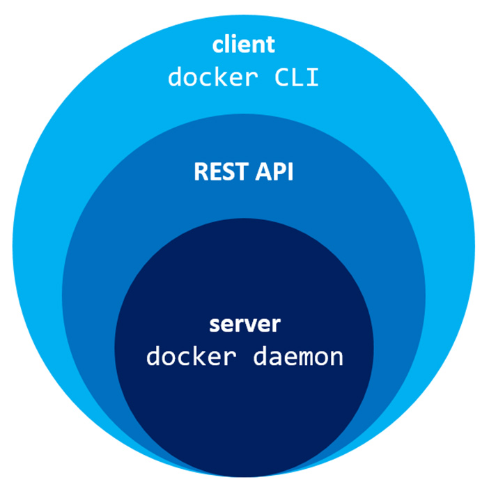
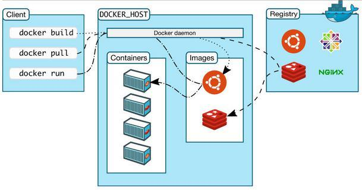
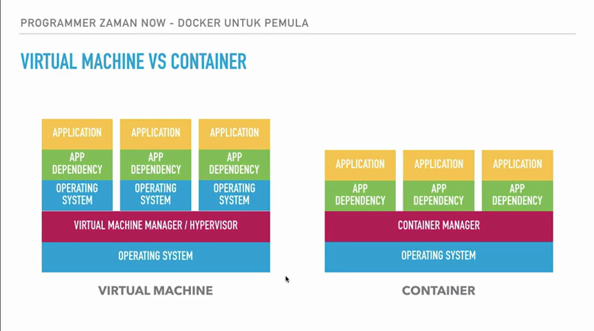
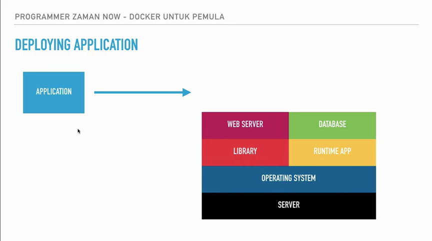
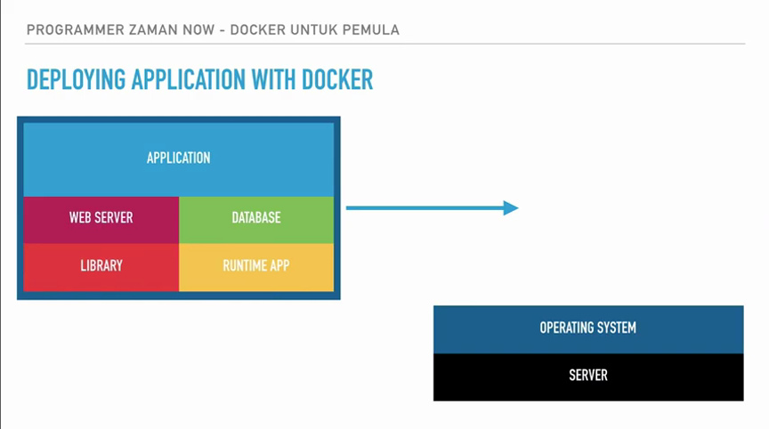
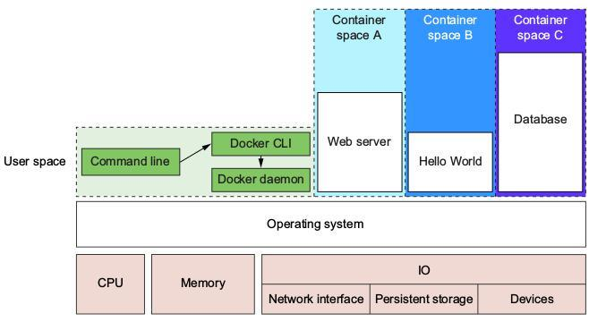

Arsitektur Docker¶
Arsitektur docker yang membedakan dengan virtualisasi lain terletak pada object docker yang berisikan Images, Container, Network,** Volumes**.
Semua object tersebut akan diproses di dalam docker daemon (sama halnya dengan mysql server)
Ketika menginstall docker maka akan terdapat 2 buah jenis application yaitu docker server dan docker client.
Docker server atau yang biasa disebut sebagai docker daemon (dan lebih sering disebut sebagai docker host) adalah service yang berjalan pada OS induk (OS pada PC atau laptop atau local machine).
Hint
Untuk selanjutnya OS induk akan disebut sebagai host saja (lihat pada section glosarium)
Docker daemon ini hanya dapat berjalan pada linux (menggunakan konsep kernel)
Warning
Istilah docker daemon hanya berjalan pada linux yang dimaksud adalah docker daemon ini akan menggunakan virtual OS linux.
Artinya jika menginstall docker pada windows atau mac, maka akan masih akan tetap dapat dijalankan, hanya saja secara default akan menggunakan linux sebagai virtual OS-nya.
Terdapat cara untuk mengubah (switch) dari virtual os linux ke windows server, hanya saja masih belum terlalu baik (stabil) untuk saat ini.
Docker client sebenarnya hanya berupa perintah (command) pada terminal.
Perintah pada docker client selanjutnya akan dikirim ke docker server (docker daemon).
Berikut penggambaran pada penjelasan diatas
Docker daemon sendiri akan me-exposes sebuah REST API, dari REST API tersebut akan memungkinkan tool/program dapat saling berkomunikasi ke docker daemon melalui API (socket).
Dengan kata lain docker daemon berfungsi untuk manajemen container (container manager).
Setelah docker daemon menerima perintah dari docker client maka docker daemon akan menjalankan perintah tersebut dan kemudian mengembalikan lagi ke docker client.
Hint
Ketika menjalankan command pada docker client (docker CLI) maka dia tidak akan menjalankan command tersebut di OS induk (baik pada windows atau mac atau bahkan os induk linux itu sendiri) melainkan akan menjalankan pada docker daemon sebagai virtual OS linux tersebut.
Docker bukanlah virtual machine, namun container manager.¶
Jika menggunakan konsep virtual machine, apabila terdapat 3 buah application maka harus menginstall operating system sebanyak 3 buah untuk 3 application tersebut.
Ini dikarenakan pada virtual machine dia harus membuat adanya OS guest (OS pada virtual machine) jika ingin menjalankan application tersebut, atau singkatnya adalah keseluruhan komponen yang dibutuhkan.
Jika menggunakan docker, maka hanya perlu 3 container, dimana 3 container tersebut akan menggunakan operating system induk yang digunakan pada container manager, atau dalam arti lain adalah nebeng ke sistem operasi induk.
Namun perlu diketahui bahwa container manager akan meng-isolated container, yang artinya jika terdapat adanya container yang mengubah konfigurasi Operating system tidak akan sampai menganggu container lain.
Hint
Istilah isolated pada docker adalah membuat adanya antar tiap container tidak dapat berhubungan (satu container tidak dapat melakukan adanya perubahan di container lain).
Atau dalam bahasa mudahnya ketika dijalankan local machine (local PC/laptop), jika terdapat lebih dari 1 container maka ini tidak akan sampai menganggu container lain dalam menjalankan application, sehingga hanya perlu 1 docker (1 container manager) untuk semua application pada 1 machine.
Keuntungan menggunakan Docker¶
Jika menggunakan cara biasa, maka ketika deploy di server harus menginstall beberapa komponen dalam menjalankan application, seperti web server, database, dan beberapa konfigurasi lainnya.
Namun jika menggunakan docker, maka sebelum deploy akan membuat adanya packages atau kumpulan komponen (dalam menjalankan application) pada suatu images
Tentu ini sangat menguntungkan karena bisa mem-bundle semua dalam satu package dan tinggal melakukan deploy.
Jika menggunakan cara biasa tentu akan sangat sulit, terlebih jika memiliki lebih dari 1 server production, akan ada banyak konfigurasi yang dilakukan di lebih dari 1 server.
Docker tidak seperti teknologi Hypervisor yang harus menggunakan OS secara utuh, docker menggunakan container yang akan menginduk pada OS induknya.
Sehingga kebutuhan RAM akan jauh lebih kecil.
Beberapa objects dan konsep pada Docker¶
Docker Images¶
Images pada docker layaknya sebagai class yang dapat di-instansiasi.
Instansiasi ini berupa container yang dapat dijalankan.
Untuk membuat images dibutuhkan file Dockerfile untuk mem-build image.
Docker Container¶
Container adalah sebuah instansiasi (atau object) daripada images.
Pada container akan terdapat berbagai tools/program yang diikat beserta library, file konfigurasi, dan seluruh komponen yang dibutuhkan dalam menjalankan container (application pada container).
container menggunakan konsep shared kernel pada sistem operasi host (docker daemon) yang dijalankannya.
Share kernel memugkinkan juga berbagi library dan dependency yang dibutuhkan, sehingga sebuah layanan (aplikasi) dapat dijalankan tanpa harus menghidupkan guest os dahulu, proses tersebut dihilangkan, sehingga kebutuhan resource (cpu, ram) berkurang dan waktu tempuh untuk menjalankan layanan semakin cepat
Docker Registry¶
Registry pada docker (atau biasa disebut Container registry) merupakan tempat menyimpan image docker, istilah mudahnya adalah repository layaknya github/gitlab.
Setelah membuat image docker (build dari Dockerfile) maka selanjutnya dapat memasukkan ke dalam registry.
Setelah terdapat di registry maka server (production) dapat melakukan pull image tersebut.
Mengapa tidak melakukan langsung ke server langsung ???
Karena sederhananya jika lebih dari 1 server maka harus melakukan pengiriman (upload) ke tiap server.
Jika menggunakan registry maka hanya perlu meng-upload images dari local machine ke registry dan keselanjutnya di tiap server hanya perlu melakukan pulling images pada registry.
Ini juga akan membuat adanya keteraturan dengan developer lain, dimana satu developer akan mengupload ke registry dan developer lain bisa melakukan pulling images pada registry tersebut.
Terdapat berbagai registry yang sudah ada, seperti docker hub, google container hub, aws elastic container registry.
Namun disarankan untuk menggunakan docker hub, karena selain sebagai registry resmi (official) dari docker juga sudah terdapat banyak image yang bisa digunakan.
Docker volume¶
Docker dapat menggunakan volume sebagai virtual storage yang akan digunakan.
Contoh sederhananya adalah untuk menyimpan data yang dinamis seperti database.
Secara default container yang dijalankan tidak memiliki storage, sehingga ketika container dihapus maka data yang ada di dalamnya ikut terhapus.
Command umum pada docker objects (image, container, volume)¶
Sejatinya command pada docker akan menggunakan format yang sama, hanya saja tidak semua objects (images, container, volume, network) menggunakannya
command:
docker <objects> [COMMAND]
Terdapat berbagai macam COMMAND yang sama pada tiap objects docker, berikut adalah beberapa listnya:
lscommand ini akan me-list images, container, volume dan network yang sedang dijalankan
ls -acommand ini akan me-list objects pada container yang sedang berjalan maupun yang tidak dijalankan.
command ini merupakan kependekan daripada
--allcreatecommand ini akan membuat container, volume, dan network baru
rmcommand ini akan menghapus container, image, volume dan network pada docker.
Namun perlu diingat konsep docker objects adalah depedency, jika semisal ingin menghapus image maka harus menghapus container dahulu.
prunecommand ini hampir sama dengan rm hanya saja ini akan menghapus container, volume dan network yang tidak digunakan
logscommand logs akan memperlihatkan proses run daripada suatu proses pada container.
inspectcommand inspect digunakan untuk melihat adanya konfigurasi di dalam suatu container, volume dan network.
Selain itu terdapat berbagai macam parameter pada tiap COMMAND, berikut adalah beberapa contohnya:
--nameparameter ini akan digunakan untuk menamai container.
Secara default docker akan menamai container dengan nama yang cukup unik, beberapa diantaranya biasanya nama orang.
-pparameter ini akan membuat adanya port pada container yang akan dijalankan.
Terdapat 2 port yang harus diisikan yaitu port… dan port
-eParameter ini adalah untuk membuat environment variable pada container.
Pada beberapa container dibutuhkan adanya environment variable untuk menjalankan servicenya, semisal mysql dengan environment variable
MYSQL_ROOT_PASSWORD